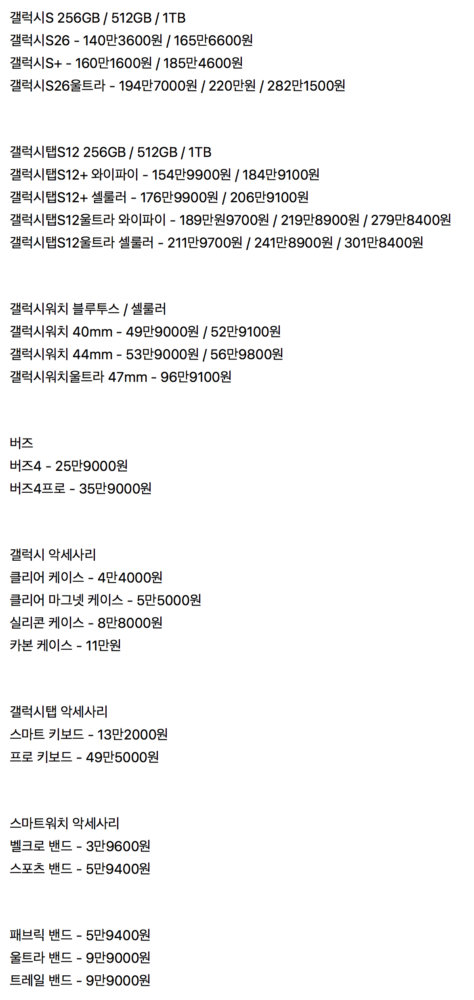
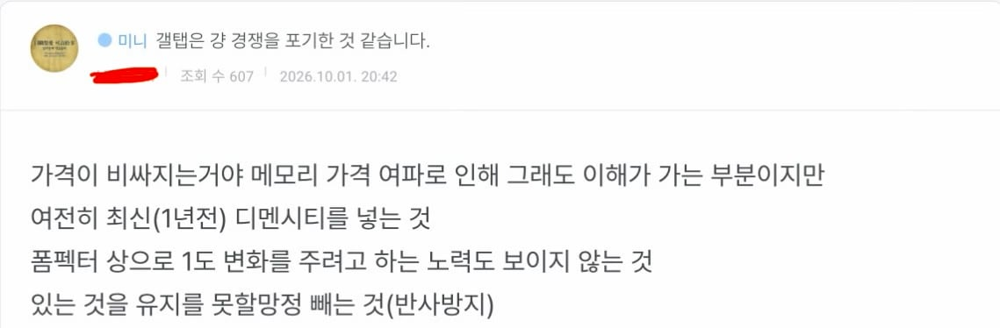
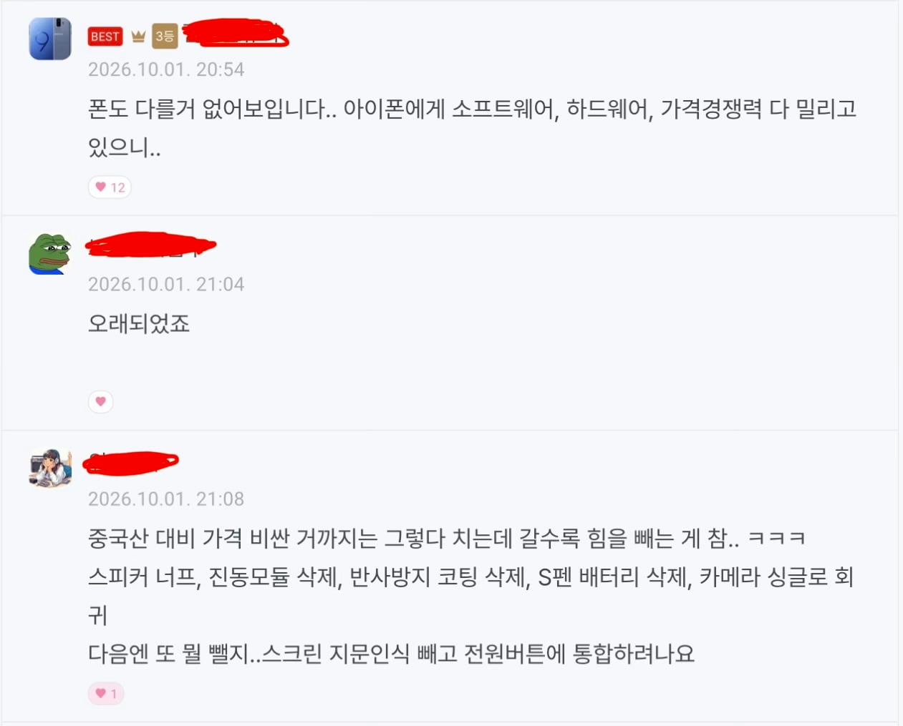
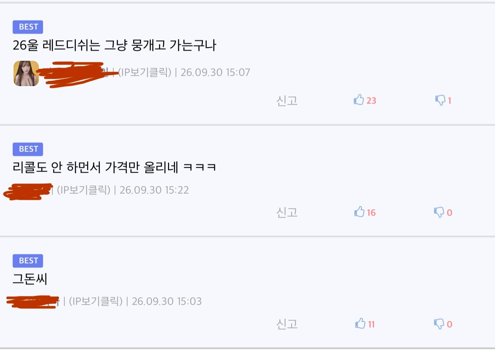
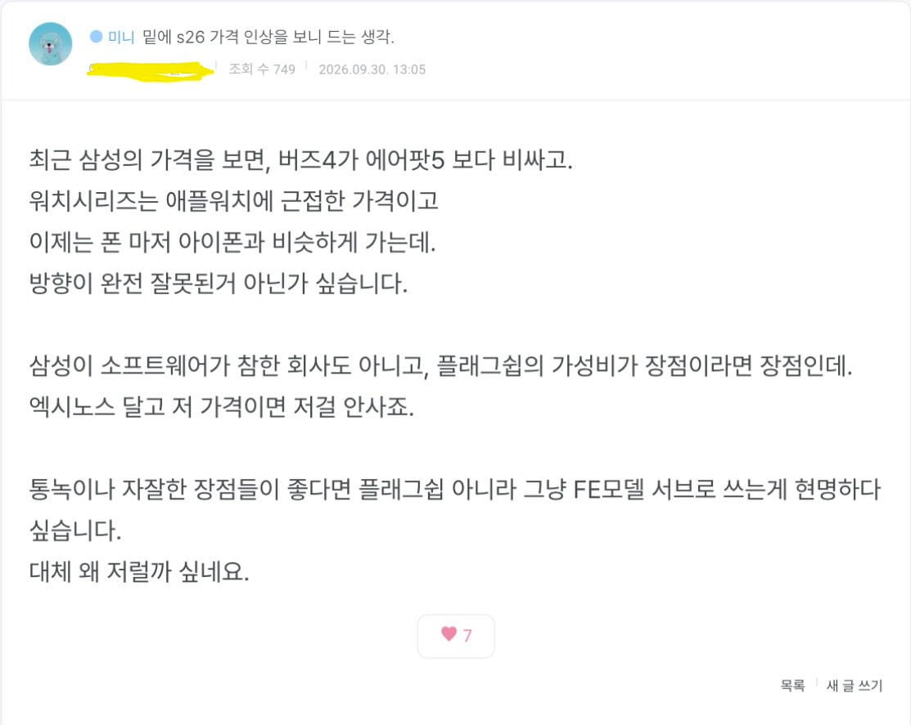
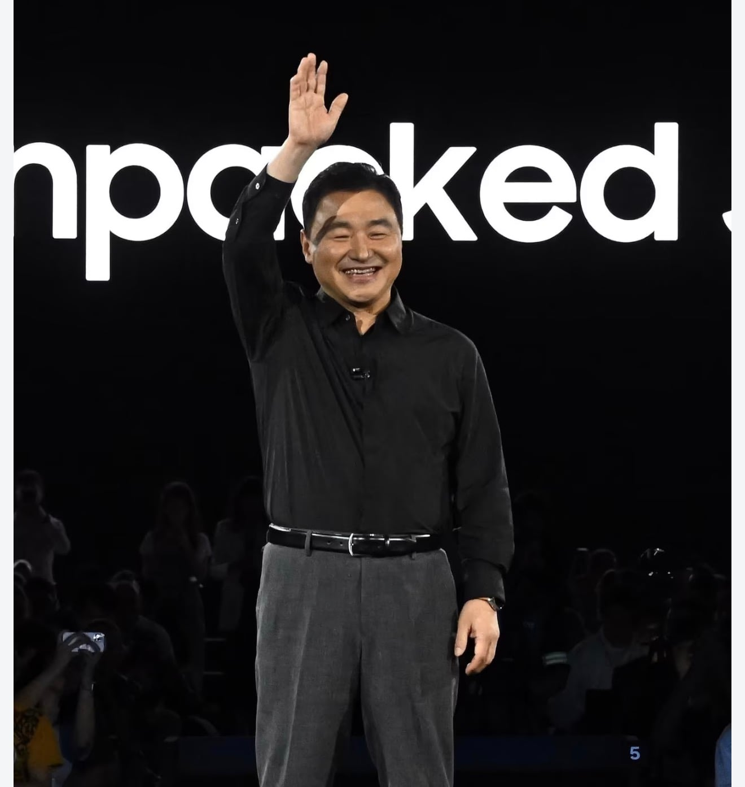

개빡친 갤럭시 유저들




갤럭시 유저들이 빡친이유
1. 가격 올려도 괜찮다 다만 애플처럼 그만한 스펙&성능이 따라오면 이해라도하지 원가절감은 심해지는데 가격만 올린다
2. 내년 가격이 두렵다
(갤S27시리즈 국내 전량 엑시노스 탑재 유력 가격은 10% 인상 전망)
3. 이젠 모바일시장 포기한것처럼 보인다


개빡친 갤럭시 유저들




갤럭시 유저들이 빡친이유
1. 가격 올려도 괜찮다 다만 애플처럼 그만한 스펙&성능이 따라오면 이해라도하지 원가절감은 심해지는데 가격만 올린다
2. 내년 가격이 두렵다
(갤S27시리즈 국내 전량 엑시노스 탑재 유력 가격은 10% 인상 전망)
3. 이젠 모바일시장 포기한것처럼 보인다

갤탭 1년 쓰고 메인보드 고장남 수리비 존나 많이 들어서 걍 아이패드 에어로 넘어갔는데 3년 째 잘 쓰는중 폰은 모르겠는데 태블릿은 아이패드가 맞다 갤탭 쓸 때 영상 시청할때도 발열 장난 아니였음
뭘 쓰셨는지 모르겠지만 23년 10월에 S9+ 사서 공사 현장에서 도면 보면서도 아주 잘 쓰고 있는데...
패드는 아이패드 미만 잡이긴한데
2020출시된 탭7+ 아직까지도 멀쩡하게 쓰고 있는데...?
MX 사업부 26 Q2 적자 전환, Q3도 적자 예상
알아서 망하고 사업접겠지...
갤럭시핏도 워치랑 급차이 주려고 이 악물고 gps 안넣고
탭은 가격 생각하면 중국보다 밑이긴함
요즘은 이슈보다 이슈에 대응하는 태도가 더 마음에 안듬
원가절감하다가 뇌도 절감됐나
ㅈ같지만 탭은 애플이나 짱탭 이외엔..
레노버꺼보면 100만원에 13인치 + 키보드 + 펜까지 다주더만
이번 s26울트라 변색이슈 그지랄로 넘어간 거 보고 좀 역하긴 했음
탭은 성능생각하면 아이패드고 그냥 무난할거면 짱탭임..
삼성 쓰는 애들은 애플 욕은 왜하는거여 도대체 ㅋㅋㅋㅋㅋㅋㅋㅋㅋㅋㅋㅋㅋㅋㅋㅋㅋ 도긴개긴 이구만
너같은애들처럼 어그로 끄느랴
애플이 중국에 기술유출 존나게 해서 존나 키워주니까요
삼성도 파운더리를 하니 리패키징 디버깅해서 지금까지 모든 제품을 만든건 아시나요?
이 말을 이쁘게 포장하면 한국인들이 흔히 말하는 최초나 혁신은 못하지만 이미 있는것을 개선해서 더 잘만든다이고 나쁜말로 하면 중국같은놈이죠
삼성의 DRAM, 엘지의 OLED 기술, 소니의 마이크로OLED, 자국기업인 GTAT는 사파이어 글래스 기술 중국에 유출되고 파산.
지금 뭐 애플 빨아주고 변호하려고 삼성도 병신짓 했다고 물타기 하는거에요?
님의 국적이나 정치성향같은건 모르겠고 상종하기 싫은 논리와 화법을 구사하는데 저리 가세요
애플이 너무 십병신이라 삼성이 애지간히 병신짓을해도 쉴더가 넘쳐나는구나 ㅋㅋ
갤탭은 필기감 말고는 칭찬해 줄 건덕지가 너무 없음.. 갤탭7까지만 해도 나쁘지 않았던 거 같은데
디램이랑 플래시 비싼거로 인상이야 뭐 어쩔수 없긴한데
그거 손해 줄이겠다고 진짜 단가 얼마 절약도 안되는 디스플레이 저반사 처리를 안하는건 선 넘었지
돈있으면 아이패드 쓰는게 답이고 돈 없으면 레노버 오포 사는게 정답임
갤레기 탭은 회사에서 업무용으로 강요 할때 어쩔 수 없이 쓰는 용도로 딱이지
메모리값 존나 비싸지는데 저정도 비싸지는거 어쩔 수 없지 않음?
그래서 전작에 있던 저반사 처리 왜 안해줌?
모르지 폰 관심없어서 중고 노트10 30만원 주고 사다가 쓰는데
탭은 저반사 처리 안하고
폰은 충전하다 불타고 디스플레이 변색 되어도 해명이나 해결 안하고 배째라 하는것도
메모리 가격이 올리서 그런거임?
모르면 그냥 입을 다물던지
솔직히 갤탭은 지금 가격이 문제가 아님

진짜 삼성 최근 하는거 보면 문제있는데도 환불 교환도 안해주고 그냥 아몰랑 하는게 애플 깔게 아님.. 애플은 적어도 환불 교환에 소프트웨어 업데이트라도 해주는데 삼성은 뭐 하나도 해결된게 없음 맨날 xx승리단 정신승리하는데 그냥 고객을 호구로 보는 문제를 고쳐야 한다 생각함
애초에 안드로이드 고성능 태블릿시장이 쥐좆이라그럼ㅋㅋㅋ
요즘 하는 거 보면 그냥 모바일은 접은거 같음
보안 리스크 때문에 한계가 명확한 사업이었지 애초에
경찰이 영장은커녕 협조요청 딸깍만 하면 비번이고 사진이고 다 털어서 갖다바치는 나라에서 2등이라도 한게 기적이었음
통녹 때문에 버릴 수가 없는게 문제임 아이폰 통녹은 병신같아서 시발.. 통녹만 해결되면 당장 아이폰 갈아타는건데..
갤쓰다가 아이폰 넘어왔는데 기본 통녹말구 skt나 lg쓰면 통신사 앱으로 해.. 고지도 안되고 잘 되더랑...
아이폰15 썼었는데 익시오가 븅신같았었거든 지금은 좀 잘되는가보네..
아 익시오는 구리다카더라... skt가 제일 낫다나봐...
갤탭은 진짜 그돈씨 되버림
대충하고 돈은 반도체로 벌겠다인가봄
노태문 시대의 키워드는 하드웨어 원가절감임
그 이전까지 하드웨어의 갤럭시 평가받던걸 근 몇년간 다 소모함
구글은 어서 한국에 픽셀 정발해라 개드립 반응 보니까 픽셀 정발하면 넘어갈 사람 많아보인다
갤탭 ap 정책 존나 역함
디멘시티도 좋은 ap니까 디멘시티 쓰는건 그렇다쳐도 전세대 플래그십을 꾸역꾸역 넣는건 씹....
그리고 11부터 에어액션 날린거 존나 빡침
에어액션만큼 갤탭 장점인게 얼마나 있었다고 날려도 그걸 날려
그리고 11트라 때는 액정 밝기 개선 및 화질 개선이라도 있었으니 그래도 넘어갈만했는데
애당초 갤탭 쓰는 시점에서 ap성능은 덜 따지는 유저가 많을텐데 12트라에서 ap말고는 개선점이 없으면 누가 넘어감
반대로 갤탭 안 쓰는 사람들한테는 ap를 전세대 플래그십 박으면 누가 끌리겠음
이번 12트라는 누구한테도 어필하지 못하는 이상한 걸 만들었음
하다못해 패널은 아패 프로 급으로 업글해줬어야함
삼성은 5년내로 플래그쉽 스마트폰 라인 접을 듯
탭은 진짜 유기한게 보임